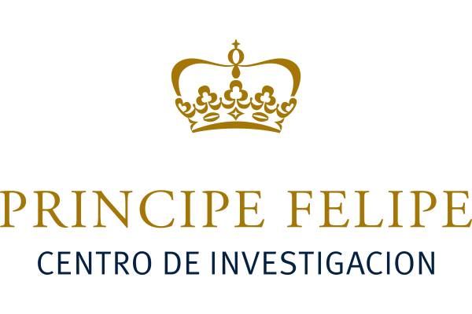
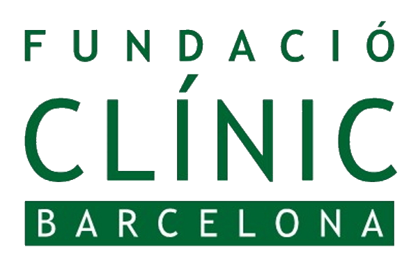
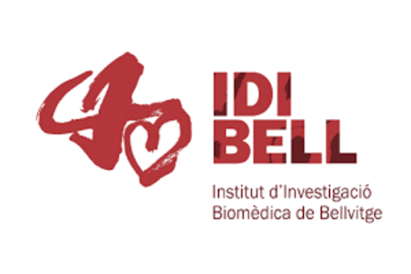
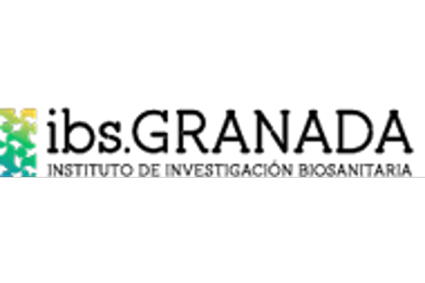

Fundación Centro de Investigación Príncipe Felipe
Comunidad Valenciana

Fundación Centro Nacional de Investigaciones Cardiovasculares
Comunidad de Madrid

Fundación Centro Nacional de Investigaciones Oncológicas
Comunidad de Madrid

Agencia Estatal Consejo Superior de Investigaciones Científicas
Castilla y León
Agencia Estatal Consejo Superior de Investigaciones Científicas
Comunidad de Madrid


Fundación para la Investigación e Innovación Biosanitaria en el Principado de Asturias
Principado de Asturias


Instituto de Biomedicina de Sevilla
Andalucía

Instituto de Investigación Biomedica de Salamanca
Castilla y León

IDIAP Jordi Gol
Cataluña




Asociación Instituto Biodonostia
País Vasco
Fundación Instituto de Investigación Sanitaria Fundación Jiménez Díaz
Comunidad de Madrid
Instituto de Investigación Sanitaria Hospital La Fe
Comunidad Valenciana

Fundación Investigación Biomédica Hospital de La Princesa
Comunidad de Madrid

Fundación Imdea Alimentación
Comunidad de Madrid
Instituto Murciano de Investigación Biosanitaria
Región de Murcia


Fundación para la Investigación del Hospital Clínico de la Comunidad Valenciana
Comunidad Valenciana


Fundació Institut de Recerca Biomédica
Catalunya
Fundación Investigación Biomédica Hospital Ramón y Cajal
Comunidad de Madrid
Instituto de Salud Carlos III
Comunidad de Madrid
Instituto de Investigación Sanitaria Illes Balears
Illes Balears

Fundación Investigación Biomédica Hospital La Paz
Comunidad de Madrid

Fundación Investigación Biomédica Hospital Gregorio Marañón
Comunidad de Madrid

Navarrabiomed - Fundación Miguel Servet
Comunidad Foral de Navarra

Hospital Universitario Virgen del Rocío
Andalucía


Universidad de Málaga
Andalucía

Universidad Pompeu Fabra
Cataluña


Instituto e Investigación Hospital 12 De Octubre
Comunidad de Madrid

Instituto de Investigación Biosanitaria de Granada
Andalucía